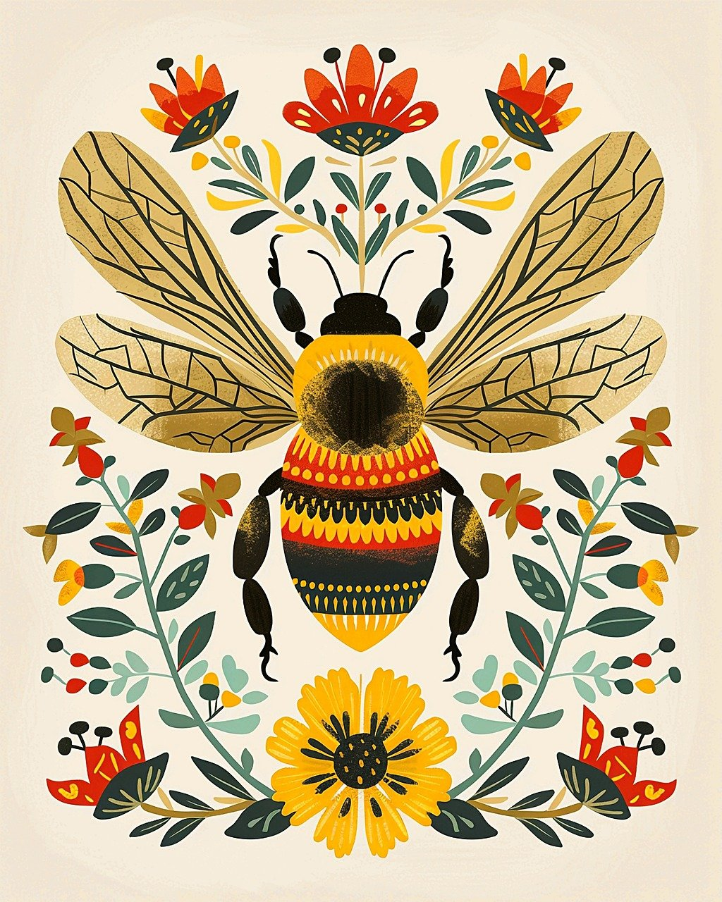

Image by Lynda Smith from Pixabay
Buzzworthy Resources
Learn More
- “Save the Bees - Greenpeace USA.” Greenpeace USA - We Fight for a Greener, More Peaceful World., 22 May 2020, www.greenpeace.org/usa/sustainable-agriculture/save-the-bees.
- “Struggling beekeepers stabilize U.S. honeybee population after nearly half of colonies died last year.” PBS News, 22 June 2023, www.pbs.org/newshour/economy/struggling-beekeepers-stabilize-u-s-honeybee-population-after-nearly-half-of-colonies-died-last-year.
- Grozinger, Christina. Pesticides and Pollinators. extension.psu.edu/pesticides-and-pollinators.
Images Used
- Duijnstee, Richard. Cartoon Bee and flower (2021, September 16). Pixabay. https://pixabay.com/illustrations/insect-bee-entomology-drawing-art-6626635/
- Pichler, Josef. Close-up of a fuzzy bumblebee mid-flight (2017, June 2). Pixabay. https://pixabay.com/photos/bumble-bee-insect-bee-2361336/
- Smith, Lynda. Illustration of a bee with intricate flowers. (2024, April 6). Pixabay. https://pixabay.com/illustrations/ai-generated-bee-nordic-folk-art-8679313/